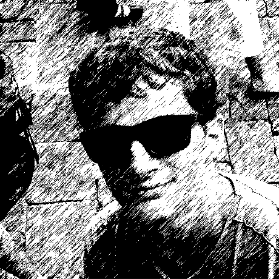

Tom Dupré la Tour
Ph.D. student
I am a first year Ph.D. student at Telecom ParisTech in France. I am supervised by Alexandre Gramfort and Yves Grenier. I graduated from Ecole polytechnique and EPFL in 2015. My work focuses on brain functional imaging (MEG, EEG), signal processing and machine learning. More details can be found in my resume.
Software
Education
I will
I will
I am contributing to the following open-source projects:
Implementation of optimization algorithms (SAG, NMF), library maintenance. In owners team.
Master in Information technology
Signal Processing, Image Processing, Video compression, Machine Learning, Distributed Information Systems, Wireless Transmission Algorithms, Microwaves, Photonic.
Research project on Human Echolocation.
Engineer degree (Master)
1st et 2nd years : cross-curricular formation, with Maths, Physics and Informatics.
3rd year : specialization in Electrical Engineering : Computer Architecture, Printed Circuit Board Design, Semiconductor Physics, Photovoltaic, Signal Processing, Opto-Electronic.
Undergraduate study
A 2-year intensive undergraduate program for admission to France’s top engineering schools.
Mathematic, physics.